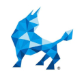
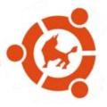

Deepin作为国产最受欢迎的Linux开源系统，深度以其“极致体验，
美观高效”的特点吸引了大批Linux爱好者的使用，并获得了一致好评。
进入官网
中标麒麟作为国产操作系统的引领者，针对X86及龙芯、申威、众志、
飞腾等国产CPU平台进行自主开发，
率先实现了对X86及国 产CPU平台的支持。
中标麒麟桌面操作系统是国家重大专项的核心组成部分.
进入官网

银河麒麟操作系统系由天津麒麟信息技术有限公司开发，
银河麒麟桌面操作系统是软硬件兼容性最好的国产桌面操作系统，拥有绚丽的人机交互界面，友好易用，用户十分钟便可轻松掌握。
进入官网
红旗Linux是一款面向家庭、教育、政府、金融以及行业等领域的通用桌面操作系统平台，
适用于学习、办公、上网、开发，以及娱乐等应用。红旗Linux是中国较大、较成熟的Linux发行版之一。
进入官网
中兴新支点是国内受欢迎的操作系统之一，是中央政府和中直机关采购入围品牌。
是一款开源，安全、可靠可控、好用的操作系统。是非常适合作为个人电脑工作学习使用的一款操作系统。
进入官网

优麒麟操作系统基于世界上最大的Linux发行版,基于Ubuntu开发，
能提供类 Windows 风格的交互功能，给用户带来更加亲切友好的使用体验。
进入官网
页面备注
工信部曾表示，将继续加大力度，支持Linux的国产操作系统的研发和应用，并希望用户可以使用国产操作系统。
学号：196102010650